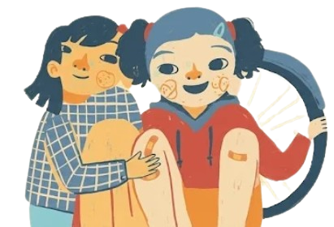
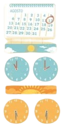

Nous lisons un journal de vacances

Communication
2 Réponds.
À quelle heure Julia a-t-elle commencé à s'entraîner le matin ?
À quelle heure a-t-elle fini l'après-midi ?
De quelle couleur est le vélo de Julia ?
3 Souligne la question qui se trouve dans le journal de Julia. Ensuite, écris des questions pour les réponses indiquées.
L'après-midi, Julia a commencé à cinq heures et demie.
Il lui a fallu cinq heures pour apprendre à faire du vélo.
Elle a appris à faire du vélo le 12 août.

